The Outreach card
SC-156 · Munchly's workspace · three options for the Outreach · 38 kiranas card on a batch's Execution, which today shows one Hindi push, addressed to one shop, and says nothing about where the offer window stands.
The maintainer (10 Oct), with two screenshots:
“In supply chain command center outreach looks weird in command center, messages are sent to multiple kiranas, no need to show them here”
“Also this block should show something like offer window over like other channels.”
“Dont change anything with the VAN delivery map”
Now
The card's first thing is the push as Shree Ganesh Kirana received it, though the same scheme went to all 38 shops with each shop's own name in it. Its only state is the push · Hindi badge: whether the 48-hour window is open, filled, over or closed early from the console is not said, while the Lister card (SC-151) walks its lot through Listed, Bid, Won and Collected, and the Negotiator says awarded. What no shop takes moves to ExpireSoon when the window ends (SC-86), and the card never says so.
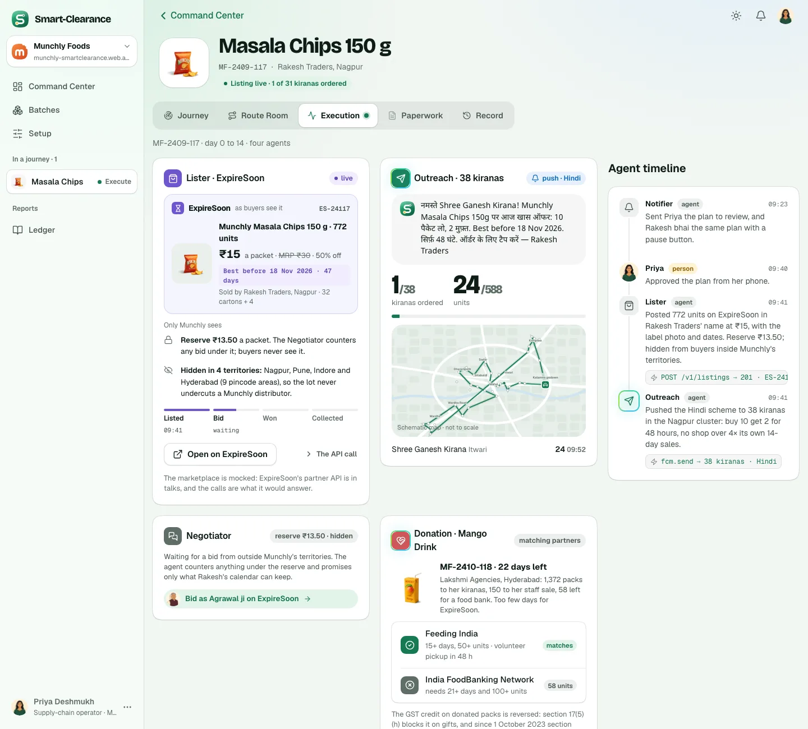
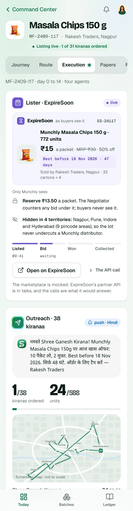
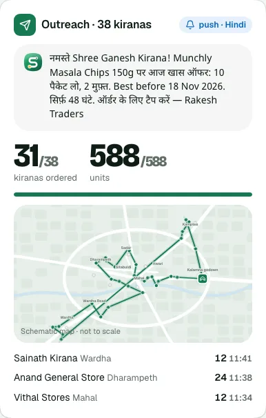
In every option
Option A · The scheme's stops
RecommendedThe Lister card's shape, for the kiranas: the scheme as the shops see it (the pack and the packets, ₹21.60 a pack with 2 free in every 10, ₹18 effective, best before, from Rakesh Traders, each shop's cap), then the figures, the offer window as one line that fills with the time gone and says when it closes, filled or ended, and four stops with their times: Sent, First order, Closed, Van round. Once the window is over, the scheme panel says what came of it.
- Trade-offs
- Reads like the Lister card beside it: one language for every channel on Execution.
- The window line answers the question at a glance; the stops say what is next.
- The tallest card: the scheme panel costs about 120 px over today's.
- What the code touches
- design3
brand.jsx(aSchemeCardbesideListerCard),screens.css(.ks,.kwin), core'sExecution.svelteandscreens.cssverbatim. The window's hours come from the case'sclosesAt; nothing new in the contract.
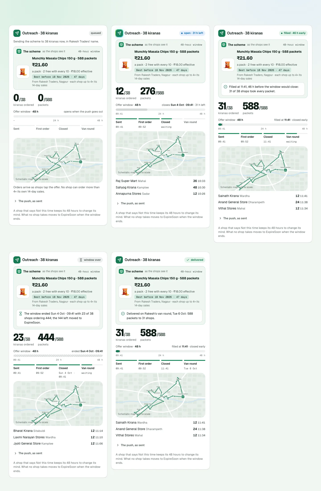
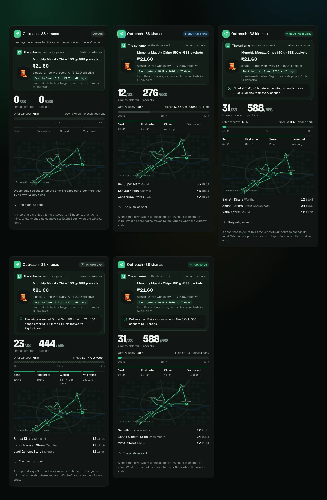
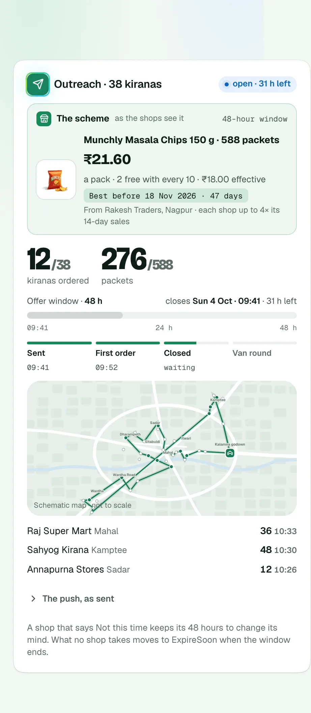
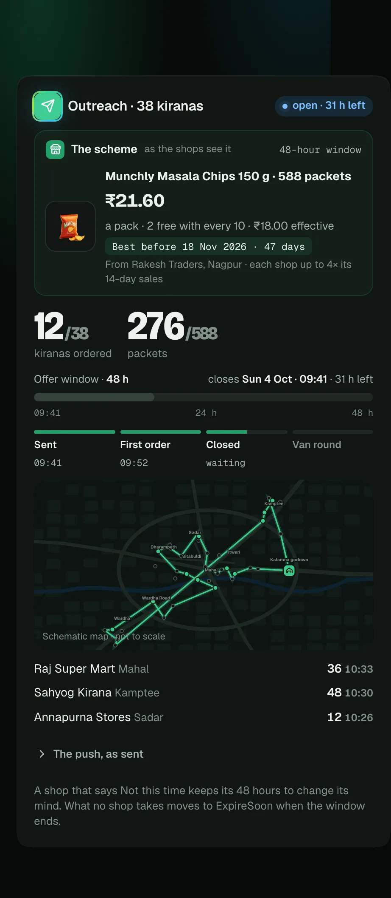
Option B · The window first
One sentence leads (“Window open. Open until Sun 4 Oct 09:41: 12 of 38 shops have ordered 276 of 588 packets”), with the scheme's terms under it in small, then the 48 hours as a timeline: each order a dot where it landed, the packets climbing step by step, the time gone shaded, and a line where the window closed, filled or stands now. Then the figures, the map and the latest orders.
- Trade-offs
- The only option that shows how fast the scheme filled, which is the Outreach agent's own result (the story's fills in two hours of its 48).
- No stops rail; the sentence carries the state, so it has to be read.
- A scheme that fills in two hours draws a spike at the left of a long, empty axis.
- What the code touches
- As A, plus a small timeline component on the orders' times (
order.at), which the case already carries.
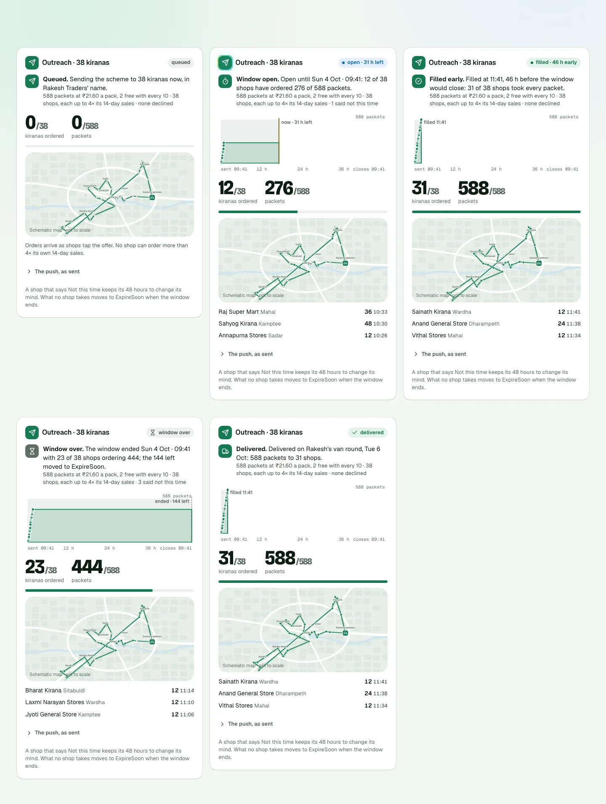
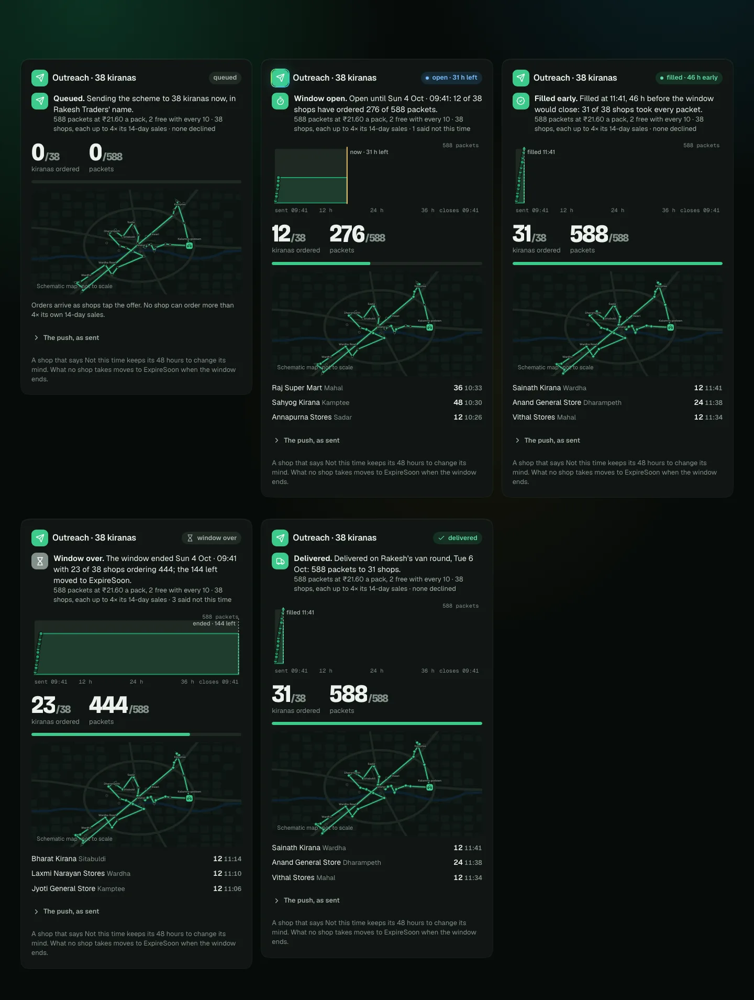
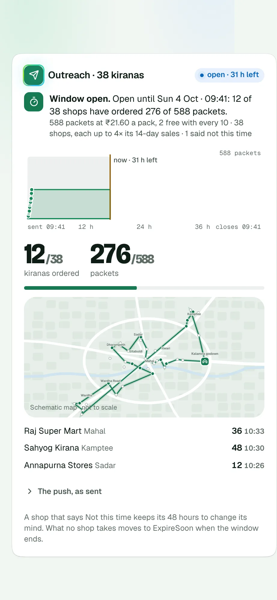
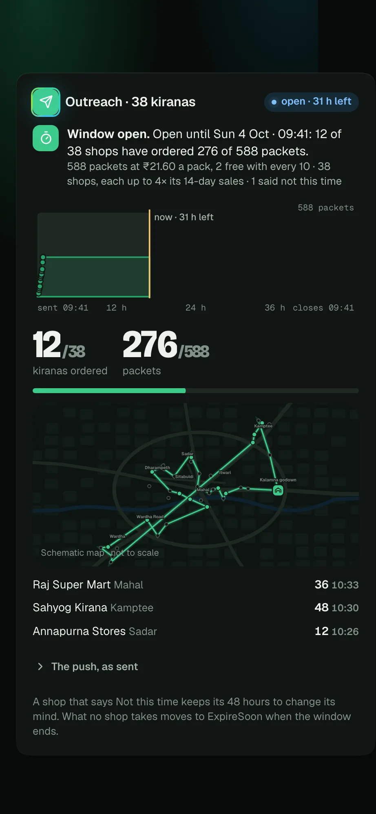
Option C · The shops
Every one of the 38 shops as a cell: the packets it ordered and when, no where it said not this time, waiting while the window is open, and hatched where it never answered. A sentence above says where the window stands; the figures and the map follow. No stops rail, no latest-orders list, since the grid has every order.
- Trade-offs
- The fullest answer to “who ordered”: the 7 shops that never order are visible, and a declined shop is named.
- 38 cells make the card the busiest on Execution, and the timing is lost (only a tooltip has it).
- A distributor with 58 shops (Lakshmi Agencies) gets a taller grid still.
- What the code touches
- As A, plus the grid; the shops come from
world.js(the stub) and the case's kiranas (live), with the declined set from SC-130.
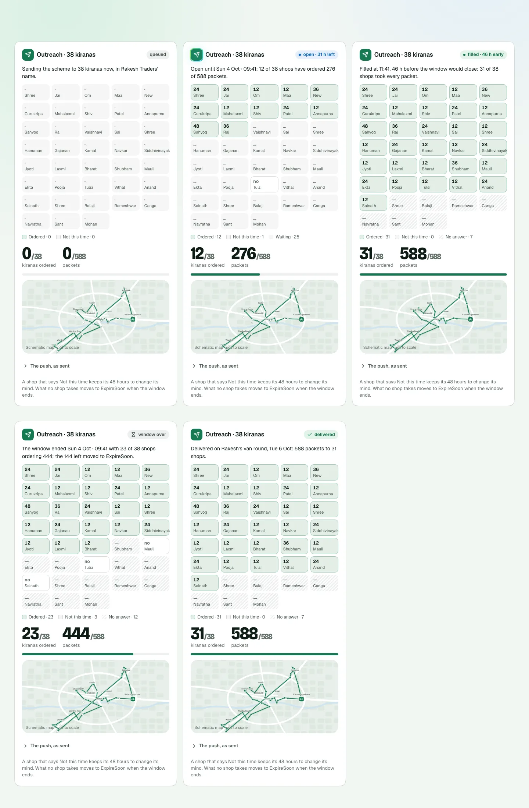
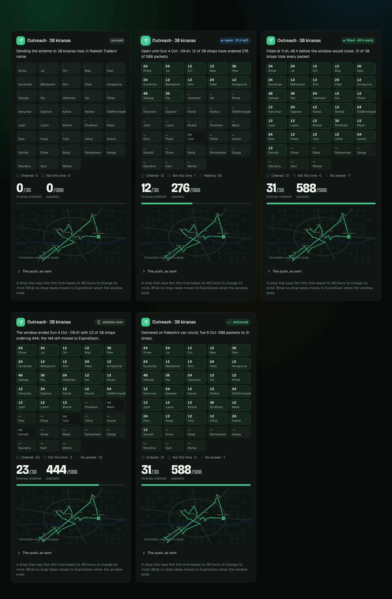
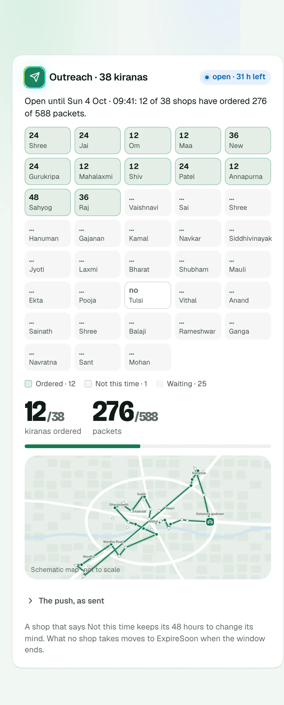
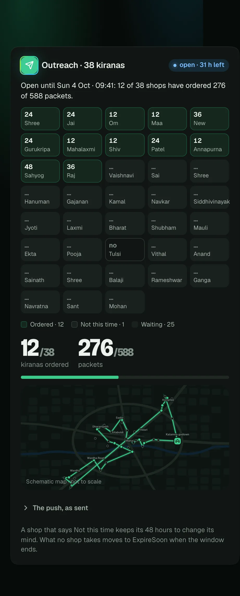
Recommended: A. The card then says the same things the Lister card says about its channel, in the same places: what was offered, where it stands, what is next. The window line answers “is the offer window over” without reading, and the push stays one tap away for anyone who wants the words.
One question
When the window ends with packets left, the card says they moved to ExpireSoon. Should the Lister card also say its lot grew by them (the case records it as offer.movedTo), or is the Outreach card's line enough?